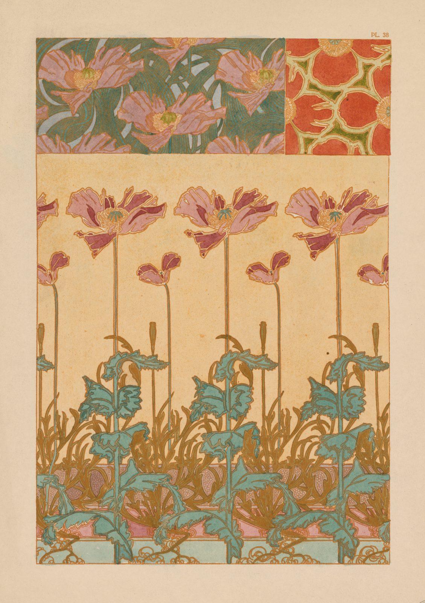

References / Book / 304
Poppy plate from Mucha’s Documents décoratifs
A plate from Alphonse Mucha’s 1902 pattern book: a frieze of pink poppies on tall stems above ochre and sea-green leaves, with two small studies of the same flower made into flat repeat patterns.
- Source
- Cleveland Museum of Art: Documents Decoratifs: Oriental Poppies, 1969.236
- Creator
- Alphonse Mucha
- Made
- 1901–2 (Cleveland Museum of Art); published 1902 (Wikipedia)
- Style
- Art Nouveau (agent-proposed, not yet reviewed by a person)
- Moods
- Botanical, decorative, soft
- Evidence
- Downloaded and inspected the Cleveland Museum of Art open-access image of print 1969.236 (2400 × 3400 px print file). Read the object record through the museum’s open-access API. The plate is numbered “PL. 38” at its upper right; Cleveland titles it “Oriental Poppies” and lists a separate print 1969.237 as “Plate 38”, which this record did not inspect.
- Reviewed
- Rights
- Open license, stored. License: CC0-1.0. Rights policy
Context
The Cleveland Museum of Art records the print as a lithograph from Documents Décoratifs, 1901–2, by Alphonse Mucha (1860–1939). CMA 1969.236.
Wikipedia: Documents Décoratifs is a series of seventy-two plates published as a book in 1902 by the Librairie Centrale des Beaux-Arts. The plates show how floral, vegetal, and natural forms can be used in decoration and decorative objects. Mucha taught decoration at the Académie Colarossi from about 1900. Wikipedia: Alphonse Mucha.
Observed
- The sheet has a wide plain buff margin. The design sits in a rectangle with a thin ochre border line.
- The lower two thirds is a frieze: three large pink poppies and several buds on tall, thin, vertical stems, against a pale peach ground.
- Sea-green leaves with jagged edges fill the base of the frieze, over a tangle of ochre-gold leaf outlines. At the very bottom, small ochre spirals run along a sea-green band.
- Top left: a dense field of pink poppies with ochre and blue-gray curving leaves on a sage-green ground.
- Top right: the poppy reduced to a flat repeat of tomato-red cells separated by pale yellow, branching lines with green centres.
- Every shape has a thin ochre or dark red outline. The colours are soft: dusty pink, plum, ochre, sea green, and sage.
Why it belongs
The plate shows the style’s method in three steps: the natural plant, a decorative field, and a flat pattern. The frieze is calm and vertical; the whiplash appears only in the leaves.
The palette matches the style’s grammar closely: dusty rose, ochre, and moss or sea green on a cream ground, with outlines instead of shading.
Borrow
Use one flower at three scales: a hero frieze, a small dense field, and an abstract repeat for backgrounds.
Outline every coloured shape in ochre instead of black to keep a warm, soft contrast.
Measured
Machine-extracted by tools/image-traits.py on . Full measurement.
- Mean chroma
- 0.28
- Palette
- #e3ceb2 27%
- #e3be8c 24%
- #9d6e32 5%
- #a77841 4%
- #72785b 3%
- #bb7e4f 3%
- #7a704c 3%
- #8e7a54 3%

